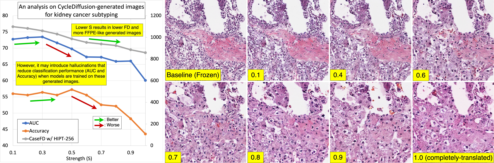

Latent Diffusion Models with Histopathology Pre-Trained Embeddings for Unpaired Frozen Section to FFPE Translation
(F2FLDM)
| [Paper] | [Code] |
| Man M. Ho1 | Shikha Dubey1 | Yosep Chong2,3 | Beatrice Knudsen3,4 | Tolga Tasdizen1,5 |
|
1. Scientific Computing and Imaging Institute, University of Utah, USA 2. The Catholic University of Korea College of Medicine, Korea 3. Departmant of Pathology, University of Utah, USA 4. Huntsman Cancer Institute, University of Utah Health, USA 5. Department of Electrical and Computer Engineering, University of Utah, USA |
Figure: Overview of FS and FFPE processes and our motivation.
Abstract
The Frozen Section (FS) technique is a rapid and efficient method, taking only 15-30 minutes to prepare slides for pathologists' evaluation during surgery, enabling immediate decisions on further surgical interventions. However, FS process often introduces artifacts and distortions like folds and ice-crystal effects. In contrast, these artifacts and distortions are absent in the higher-quality formalin-fixed paraffin-embedded (FFPE) slides, which require 2-3 days to prepare. While Generative Adversarial Network (GAN)-based methods have been used to translate FS to FFPE images (F2F), they may leave morphological inaccuracies with remaining FS artifacts or introduce new artifacts, reducing the quality of these translations for clinical assessments. In this study, we benchmark recent generative models, focusing on GANs and Latent Diffusion Models (LDMs), to overcome these limitations. We introduce a novel approach that combines LDMs with Histopathology Pre-Trained Embeddings to enhance restoration of FS images. Our framework leverages LDMs conditioned by both text and pre-trained embeddings to learn meaningful features of FS and FFPE histopathology images. Through diffusion and denoising techniques, our approach not only preserves essential diagnostic attributes like color staining and tissue morphology but also proposes an embedding translation mechanism to better predict the targeted FFPE representation of input FS images. As a result, this work achieves a significant improvement in classification performance, with the Area Under the Curve rising from 81.99% to 94.64%, accompanied by an advantageous CaseFD. This work establishes a new benchmark for FS to FFPE image translation quality, promising enhanced reliability and accuracy in histopathology FS image analysis.
Challenges

Performance on CycleDiffusion-restored slides on kidney subtype classification, including Area Under the Curve (AUC) and accuracy, alongside case-wise Fréchet Distance in the HIPT-256 feature space (FD-HIPT256). The higher strength, the more added noise and denoising timesteps, the closer to FFPE domain..
Method
Figure: Overview of our FS to FFPE image translation framework.
Ablation Study
 Figure: Ablation Studies on classifier-free Guidance Scale (GS), Strength, FS to FFPE Embedding Translation, LoRA rank, and L0 Regularization in Restoration of Artifacts in FS images, evaluated on downstream kidney subtype classfication in macro-averaged Area Under the Curve (AUC) and sample-wise Accuracy (Acc).
Figure: Ablation Studies on classifier-free Guidance Scale (GS), Strength, FS to FFPE Embedding Translation, LoRA rank, and L0 Regularization in Restoration of Artifacts in FS images, evaluated on downstream kidney subtype classfication in macro-averaged Area Under the Curve (AUC) and sample-wise Accuracy (Acc).
A Qualitative Comparison

 Figure: A qualitative comparison between AIFFPE, UVCGAN2, CycleDiffusion, and ours. Unpaired FFPE images are from a different tissue.
Figure: A qualitative comparison between AIFFPE, UVCGAN2, CycleDiffusion, and ours. Unpaired FFPE images are from a different tissue.
A Quantitative Comparison
| Method | AUC | Acc | CaseFD w/ DINOv2 ViT-L14 | CaseFD w/ HIPT-256 | CaseFD w/ ViT-DINO |
|---|---|---|---|---|---|
| FFPE | 94.63 ± 0.02 | 88.89 ± 0.03 | ∞ | ∞ | ∞ |
| Frozen Section | 81.99 ± 0.03 | 61.97 ± 0.08 | 546.86 | 1044.24 | 1581.22 |
| AIFFPE | 75.46 ± 0.04 | 62.82 ± 0.03 | 554.43 | 887.47 | 1243.67 |
| UVCGAN2 | 84.89 ± 0.01 | 70.09 ± 0.03 | 513.34 | 808.47 | 1205.63 |
| CycleDiffusion | 70.55 ± 0.02 | 53.42 ± 0.05 | 621.69 | 972.96 | 1486.58 |
| Ours w/o L0-Reg | 94.64 ± 0.01 | 73.5 ± 0.06 | 544.85 | 839.67 | 1235.65 |
| Ours w/ L0-Reg | 94.26 ± 0.03 | 80.34 ± 0.07 | 546.65 | 822.66 | 1240.07 |
A quantitative comparison between AIFFPE, UVCGAN2, and CycleDiffusion, and ours. This work outperforms previous works on the downstream kidney subtype classification in macro-averaged Area Under the Curve (AUC) and sample-wise Accuracy (Acc), while obtaining the favorable Case-wise Fréchet Distances (CaseFD). Bold/underlined values indicate best/second-best performance.
If you find our work useful, please consider citing
@misc{ho2024f2fldm,
title={F2FLDM: Latent Diffusion Models with Histopathology Pre-Trained Embeddings for Unpaired Frozen Section to FFPE Translation},
author={Man M. Ho and Shikha Dubey and Yosep Chong and Beatrice Knudsen and Tolga Tasdizen},
year={2024},
eprint={2404.12650},
archivePrefix={arXiv},
primaryClass={eess.IV}
}
License
This work, including the trained models, code, and dataset, is for non-commercial uses and research purposes only.
References
[AIFFPE] Ozyoruk, Kutsev Bengisu, Sermet Can, Guliz Irem Gokceler, Kayhan Basak, Derya Demir, Gurdeniz Serin, Uguray Payam Hacisalihoglu et al. "Deep learning-based frozen section to FFPE translation." arXiv preprint arXiv:2107.11786 (2021).
[UVCGAN2] Torbunov, Dmitrii, Yi Huang, Huan-Hsin Tseng, Haiwang Yu, Jin Huang, Shinjae Yoo, Meifeng Lin, Brett Viren, and Yihui Ren. "Rethinking CycleGAN: Improving Quality of GANs for Unpaired Image-to-Image Translation." arXiv preprint arXiv:2303.16280 (2023).
[CycleDiffusion] Wu, Chen Henry, and Fernando De la Torre. "Unifying Diffusion Models' Latent Space, with Applications to CycleDiffusion and Guidance." arXiv preprint arXiv:2210.05559 (2022).
[LoRA] Hu, Edward J., Yelong Shen, Phillip Wallis, Zeyuan Allen-Zhu, Yuanzhi Li, Shean Wang, Lu Wang, and Weizhu Chen. "Lora: Low-rank adaptation of large language models." arXiv preprint arXiv:2106.09685 (2021).